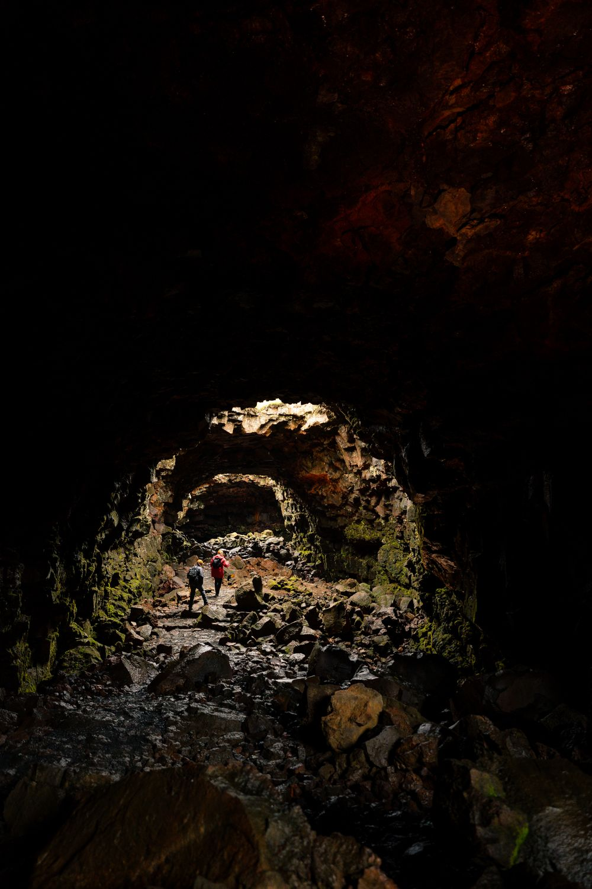

Maren Hartley · Speleologist & cave surveyor
A cave is measured one leg at a time.
I survey caves for the people who have to make decisions about them — conservation bodies, research groups, landowners and expeditions. Tape, compass, clinometer and a waterproof book: every station numbered, every loop closed, or the error printed on the map where everyone can see it. If the loop won't close, the cave is not wrong. We are.

The instrument
Work a traverse: four legs, honestly added up.
This is the arithmetic inside every survey I sell, with the method printed before the numbers — because a calculator you cannot check is just a claim. Set each leg's tape distance and gradient, and the sheet reduces them the way the drawing office does.
The printed method — check the sheet against it
Plan contribution of a leg = distance × cos(gradient) · Vertical change of a leg = distance × sin(gradient). Gradients are read downhill-negative: a leg dropping at −18° loses height. Distances step in 0.5 m (a tape is read to the centimetre; half-metre steps keep thumbs honest), gradients in 1° over the printed range −60° to +60°.
Totals are summed from the unrounded leg values and then rounded to two decimals — so a total can differ by a centimetre from adding the rounded legs. That is the drawing-office convention, and it is stated here so you can catch it rather than be caught by it.
Elevation profile — the same legs, drawn in section
Bearings are read leg by leg in the field and belong to the plan plot above; this sheet works in section — what tape and clinometer say about length and height. Plan length is always shorter than tape length on sloping ground. The difference is the cave's, not an error.
The register
Four services, booked like fieldwork.
Every commission is entered in the register with its ground and its status, the way a survey is entered in the book. If a line says booking, it means the season has room; if it doesn't, I'll tell you the same on the phone.
| Service | Commissioned by | Ground | Status |
|---|---|---|---|
| Full system survey | Research groups & caving clubs | Vertical limestone systems | Booking — 2027 season |
| Conservation documentation survey | Conservation bodies & landowners | Protected & scheduled caves | Booking now |
| Expedition survey support | Expedition teams | Remote & expedition caves | Two slots — 2027 |
| Resurvey & data rescue | Clubs, archives & publishers | Any system with an old book | Booking now |
Fees, in the open
Price the expedition before you write to me.
Survey work is priced by the day and the station, and the shape of the price is published here — the same rates the estimator uses, line by line. A calculator is a pricing signal, never a quote: the quote comes after I've seen the cave's details, and it itemises exactly like this.
A two-person team is the minimum underground — nobody surveys alone. Drawing-up is charged per station because the book, not the boot leather, is where a survey is finished.
Travel, accommodation and permits are charged at cost and itemised separately — they belong to the cave's geography, not to my rate card.
Two-person team, instruments, lamps and the book. The unit everything else hangs on.
Rope wear, hangers, bolts, batteries and carbide-free lighting consumables, per underground day.
Centreline reduction, plan and elevation drawing, grade statement and the written report.
Entrance location and fixing, permissions liaison, approach and derigging work.
Old books audited leg by leg; what can be re-walked is, what can't is marked, never invented.
Word from a client
Attached to the survey it praises.
“We handed Maren a loop that wouldn't close and two seasons of our own notes. She handed back a survey, the blunder found and named, and a book our next team can actually re-walk. That is the whole job, done properly.”
Dr E. Whitfield · Conservation Officer, Dales Karst Conservation Partnership
Have a cave that needs a book?
One form, five fields, answered by me — usually from the surface, occasionally from a bothy with the book drying beside me.